autoscale: true
JSer.info 5周年
自己紹介

- Name : azu
- Twitter : @azu_re
- Website: Web scratch, JSer.info
はじまり
2011年
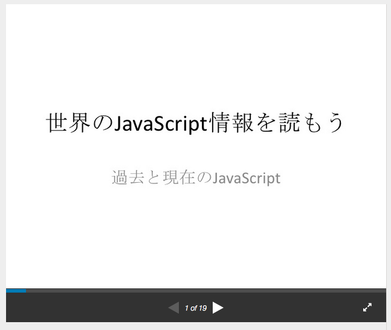
from 世界のJavaScript情報を読もう
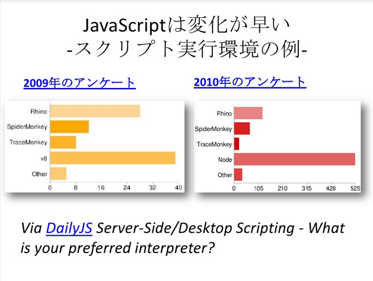
from 世界のJavaScript情報を読もう
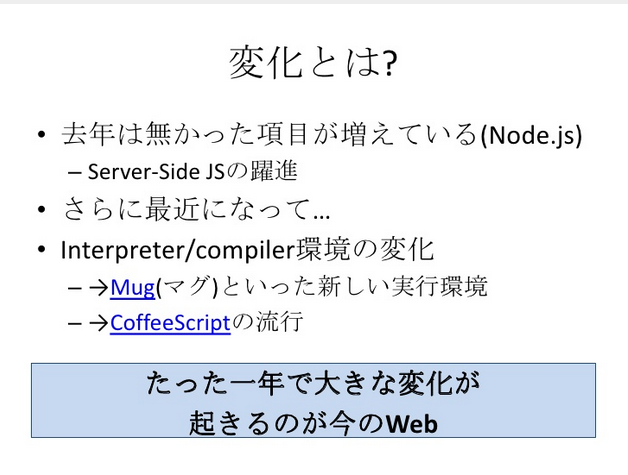
from 世界のJavaScript情報を読もう
現実的な問題 古い情報が混じっている 情報の取捨選択が必要になる
from 世界のJavaScript情報を読もう
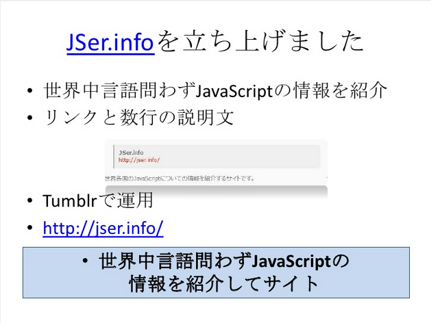
from 世界のJavaScript情報を読もう
目標はJavaScriptの情報を
”紹介する”ではなく”知ってもらう”事
1年
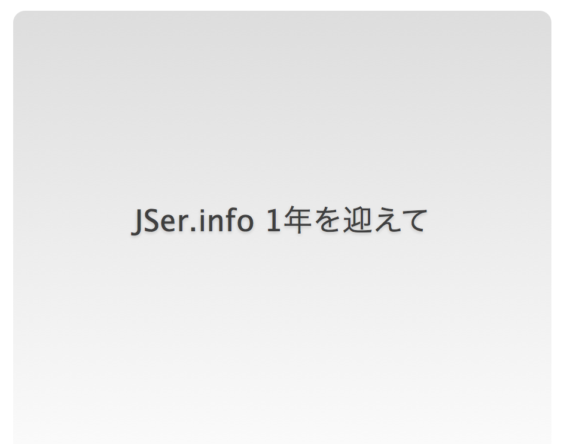
from JSer.info 1年を迎えて
紹介するのではなく知ってもらう JSer.infoの記事 ではなく 紹介先の記事 をブクマしてもらいたい 個々の物体ではなくまとまり、傾向として見てもらう
from 世界のJavaScriptを読もう @ 2012
テーマ
調べる方法を知る
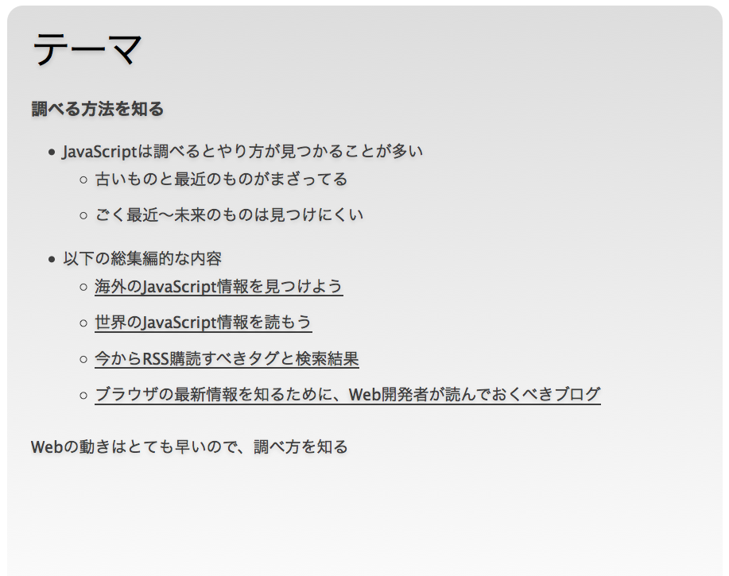
ウェブの進化

from 世界のJavaScriptを読もう @ 2012
近年のJavaScript環境の変化は急速
一年で常識が変わる事もあるレベル
なので、変化に対応できるように調べ方を知る
2年
from 2013-01-21のJS: jQuery 1.9... - JSer.info
開始するときにまず2年間は続けると決めたのは達成しました。 以上
3年
関連リンクの追加
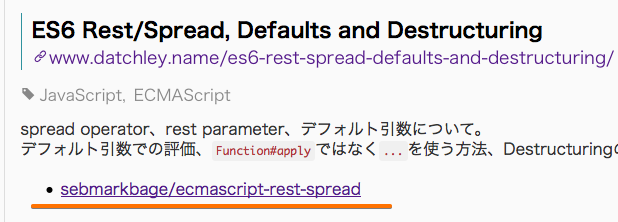
GitHub Pagesへ移行
- TumblrからGitHub Pagesへ
- [JSer.infoをTumblrからGitHub Pagesに移行しました - JSer.info](http://jser.info/2014/08/03/renewal/ "JSer.infoをTumblrからGitHub Pagesに移行しました - JSer.info") - 韓国語版 by @UYEONG
- Pull Reuqest駆動へ
従来のワークフロー
- 記事を読む
- Tombfixでメモ付きでブックマーク
- 一週間ぐらい1,2を繰り返しで紹介記事のデータを貯める
- 貯めたアーカイブを整形
- 整形した記事をコピペ、ヘッドラインを書く => 記事完成
ワークフローの改善1

- 記事を読む
- Tombfixでメモ付きでブックマーク
- :new: CIが単語の自動チェック
- 一週間ぐらい1,2を繰り返しで紹介記事のデータを貯める
- :new: 編集用アプリの作成
- 貯めたアーカイブを整形
- 整形した記事をコピペ、ヘッドラインを書く => 記事完成
4年
多言語対応
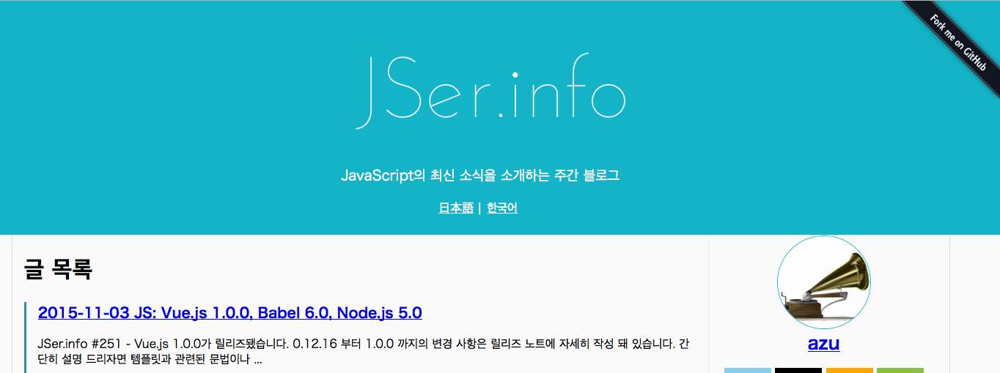
多言語対応
- Support Multiple Languages · Issue #83 · jser/jser.github.io
- Jekyllのプラグインで他言語対応 - 韓国語版
- http://jser.info/ko/ - Thanks @UYEONG and @techhtml
統計処理ライブラリ
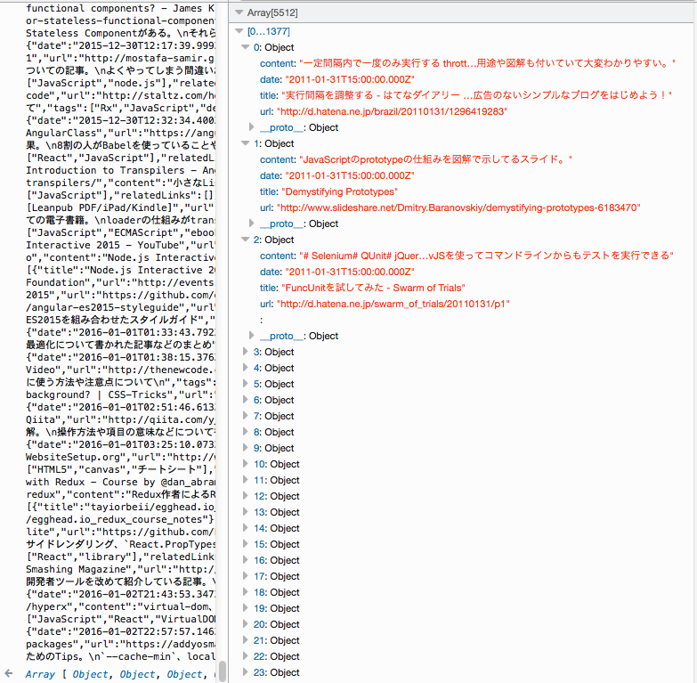
- JSer.infoで紹介したサイトデータは全てJSONとして取得可能
- [jser.info/source-data/items.json](http://jser.info/source-data/items.json) - [jser.info/posts.json](http://jser.info/posts.json) - jser/stat-js
- いつ紹介したかなどを取得出来るライブラリ - 自然言語処理をして関連サイトデータの検索など
何で統計処理ライブラリを作ってるか?
- 直感を数値化するため
- 例) この話題が最近少なくなってる
関連記事検索
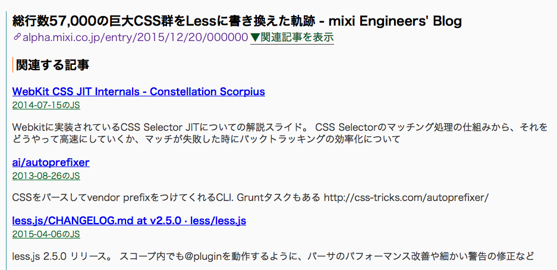
from 2015-11-16のJS
JSer.info トレンド
- jser/stat-jsを活用
- あくまでJSer.infoのデータ内でトレンド検索
- キーワード同士の紹介回数の比較
- 紹介した記事の検索など
Realtime JSer.info
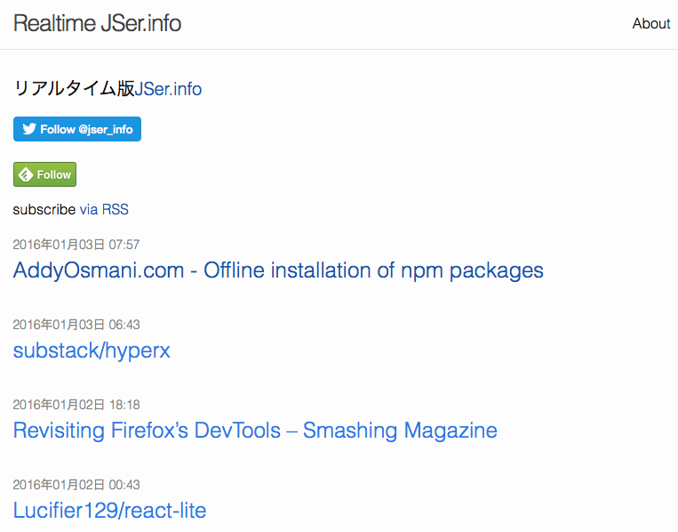
- realtime.jser.info
- JSer.infoは週一更新
- リアルタイム版はサイトデータを追加した時点で更新
- CIによる自動更新ブログ
ワークフローの改善2
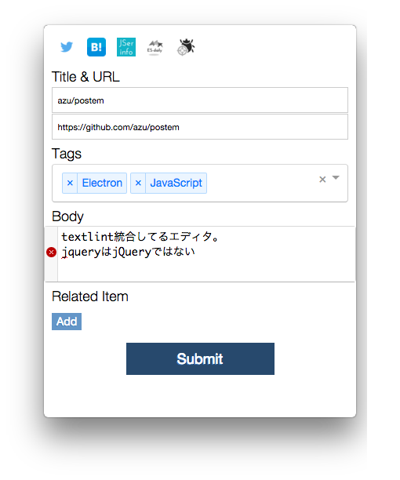
- 記事を読む
- :new: 投稿用クライアントでブクマ
- :new: CIがtextlintで自然言語のLint
- 一週間ぐらい1,2を繰り返しで紹介記事のデータを貯める
- 編集用アプリの利用
- 貯めたアーカイブを整形
- 整形した記事をコピペ、ヘッドラインを書く
- Pull Reuest駆動 => CIが自動チェック
- Atom+linter-textlintでリアルタイムLint
- 記事の完成
5年
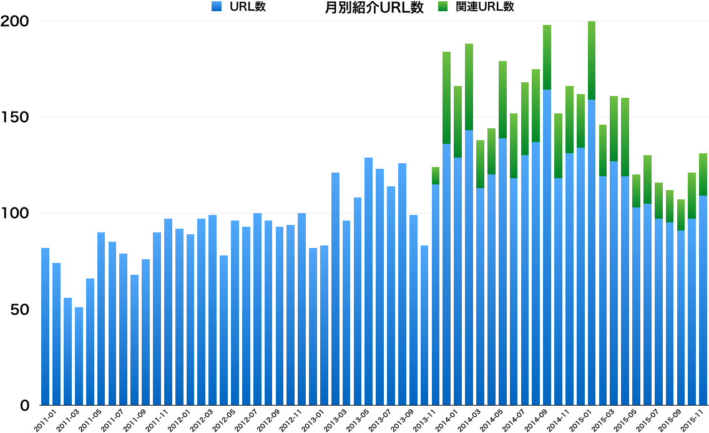
総計
投稿記事数: 261
(261*7) / 365 ≒ 5(年)
合計紹介URL数: 6312
Next
ECMAScript Daily
ecmascript-daily.github.io
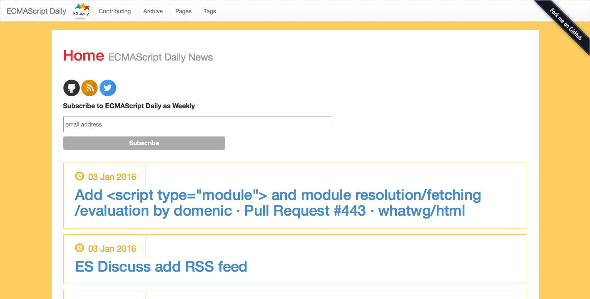
^ 目的、メモ帳以上メモ帳以下。メンテナンスコストを極限まで低くして、投稿以外は全て自動化した
今後
- jser/jser.info - Gitter をもっと活用したい

- 中期的なまとめを書けるようにしたい
まとめ
- JSer.infoの初期目標は2年だったけど5年続いている
- メンテナンスコストを小さくするための自動化に色々工夫している
- 処理を減らす事よりも、後戻りを減らすことによりコストを小さくしている
- 全体の傾向として見る方法をもう少し強化していきたい